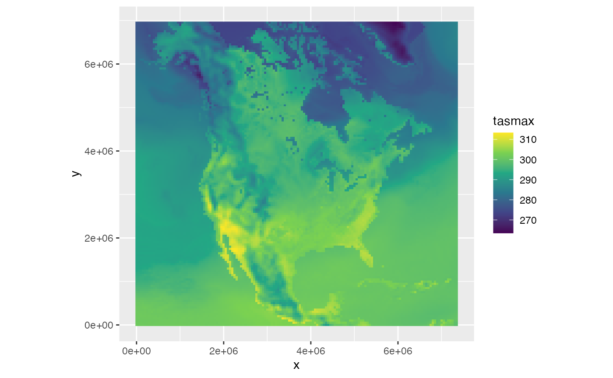

What is netCDF?
“NetCDF (Network Common Data Form) is a set of software libraries and machine-independent data formats that support the creation, access, and sharing of array-oriented scientific data. It is also a community standard for sharing scientific data.”
NetCDF is developed by
UCAR/Unidata and is widely used for climate and weather data as well
as for other environmental data sets. The netcdf library is
ported to a wide variety of operating systems and platforms, from laptop
computers to large mainframes. Data sets are typically large arrays with
axes for longitude, latitude and time, with other axes, such as depth,
added according to the nature of the data. Other types of data are also
commonly found.
Importantly, “a netCDF file includes information about the data it contains”. This comes in two flavours:
-
Structural metadata are part of the
netcdflibrary. These describe the basic building blocks of the data set, its variables, and the dimensions of the variables and how the pieces fit together. With just this information one can read the data from the resource. - Descriptive metadata are contained in attributes attached to the basic building blocks. They inform the user on what the building blocks represent. This includes crucial details like how dimensions in the resource map to the axes of the variables, but also more general items like the owners or producers of the data and the production history.
Both types of metadata are necessary to “understand” the netCDF resource.
Conventions
The descriptive metadata are not defined by the netcdf
library. To ensure interoperability, several
“conventions” have been developed over the years such that users of
netCDF data can correctly interpret what data developers have put in the
resource. The most important of these conventions is the CF Metadata Conventions. These
conventions define a large number of standards that help interpret
netCDF resources.
Other common conventions are related to climate prediction data, such as CMIP-5 and CMIP-6, but these typically extend the CF Metadata Conventions.
Using netCDF resources in R
Low-level access
The RNetCDF package is developed and maintained by the
same team that developed and maintains the netcdf library.
It provides an interface to the netcdf library that stays
very close to the API of the C library. As a result, it lacks an
intuitive user experience and workflow that R users would be familiar
with.
Package ncdf4, the most widely used package to access
netCDF resources, does one better by performing the tedious task of
reading the structural metadata from the resource that is needed for a
basic understanding of the contents, such as dimension and variable
details, but the library API concept remains with functions that fairly
directly map to the netcdf library functions.
One would really need to understand the netCDF data model and
implementation details to effectively use these packages. For instance,
most data describing a dimension is stored as a
variable. So to read the dimnames() of a dimension
you’d have to call var.get.nc() or
ncvar_get(). Neither package loads the attributes of the
dimensions, variables and the data set (“global” variables), which is
essential to understand what the dimensions and variables
represent.
While both packages are very good at what they do, it is clearly not enough.
Extending the base packages
Several packages have been developed to address some of these issues and make access to the data easier. Unfortunately, none of these packages provide a comprehensive R-style solution to accessing and interpreting netCDF resources in an intuitive way.
ncdfCF
Package ncdfCF provides a high-level interface using
functions and methods that are familiar to the R user. It reads the
structural metadata and also the attributes upon opening the resource.
In the process, the ncdfCF package also applies CF Metadata
Conventions to interpret the data. This currently applies to:
-
Groups are a feature of the newer
netcdf4format, allowing for a directory-like structure in the netCDF resource. The specific scoping rules to find related objects distributed over multiple groups are supported. - The axis designation. The three mechanisms to identify the axis each dimension represents are applied until an axis is determined.
- The time axis. Time is usually encoded as an offset
from an origin. Using the
CFtimepackage these offsets can be turned into intelligible dates and times, for all defined calendars. - Bounds information defines the size of grid cells in data variables. When present, bounds are read and used in analyses.
- Discrete dimensions, possibly with character labels.
-
Auxiliary coordinate variables which describe
scalar axes and auxiliary longitude-latitude
grids. The latter can be used by
ncdfCFto automatically align data variables that are not on a Cartesian grid to a longitude-latitude grid. - The cell measure variables are read and linked to any data variables referencing them. Cell measure variables that are external to the netCDF resource with the referring data variable can be linked to the data set and then they are immediately available to the referring data variables.
-
Labels, as separate variables identified through
the
coordinatesattribute of axes, are read, including when multiple sets of labels are defined for a single axis. Users can select which set of labels to make active for display, selection and processing. - The grid_mapping variables, providing the coordinate reference system (CRS) of the data, with support for all defined objects in the latest EPSG database as well as “manual” construction of CRSs.
More details on how package ncdfCF implements the CF
Metadata Conventions, including a feature matrix of supported sections,
can be found in the “R-CF” vignette.
Basic usage
Opening and inspecting the contents of a netCDF resource is very straightforward:
library(ncdfCF)
# Get a netCDF file, here hourly data for 2016-01-01 over Rwanda
fn <- system.file("extdata", "ERA5land_Rwanda_20160101.nc", package = "ncdfCF")
# Open the file, all metadata is read
(ds <- open_ncdf(fn))
#> <Dataset> ERA5land_Rwanda_20160101
#> Resource : /private/var/folders/gs/s0mmlczn4l7bjbmwfrrhjlt80000gn/T/RtmpBxdt42/temp_libpath12e4419edf29/ncdfCF/extdata/ERA5land_Rwanda_20160101.nc
#> Format : offset64
#> Collection : Generic netCDF data
#> Conventions: CF-1.6
#>
#> Variables:
#> name long_name units data_type axes
#> t2m 2 metre temperature K NC_DOUBLE longitude, latitude, time
#> pev Potential evaporation m NC_DOUBLE longitude, latitude, time
#> tp Total precipitation m NC_DOUBLE longitude, latitude, time
#>
#> Attributes:
#> name type length value
#> Conventions NC_CHAR 6 CF-1.6
#> history NC_CHAR 34 Attributes simplified for example.
# Variables can be accessed through standard list-type extraction syntax
(t2m <- ds[["t2m"]])
#> <Variable> t2m
#> Long name: 2 metre temperature
#>
#> Values: (not loaded)
#>
#> Axes:
#> axis name length values
#> X longitude 31 [28 ... 31]
#> Y latitude 21 [-1 ... -3]
#> T time 24-U [2016-01-01T00:00:00 ... 2016-01-01T23:00:00]
#> unit
#> degrees_east
#> degrees_north
#> hours since 1900-01-01 00:00:00.0
#>
#> Attributes:
#> name type length value
#> long_name NC_CHAR 19 2 metre temperature
#> units NC_CHAR 1 K
# Same with axes, but now without first assigning the object to a symbol
ds[["longitude"]]
#> <Longitude axis> [1] longitude
#> Length : 31
#> Axis : X
#> Coordinates: 28, 28.1, 28.2 ... 30.8, 30.9, 31 (degrees_east)
#> Bounds : (not set)
#>
#> Attributes:
#> name type length value
#> standard_name NC_CHAR 9 longitude
#> long_name NC_CHAR 9 longitude
#> units NC_CHAR 12 degrees_east
#> axis NC_CHAR 1 X
#> actual_range NC_FLOAT 2 28, 31
# Regular base R operations simplify life further
dimnames(ds[["pev"]]) # A data variable: list of axis names
#> [1] "longitude" "latitude" "time"
dimnames(ds[["longitude"]]) # An axis: vector of axis coordinate values
#> [1] 28.0 28.1 28.2 28.3 28.4 28.5 28.6 28.7 28.8 28.9 29.0 29.1 29.2 29.3 29.4
#> [16] 29.5 29.6 29.7 29.8 29.9 30.0 30.1 30.2 30.3 30.4 30.5 30.6 30.7 30.8 30.9
#> [31] 31.0
# Access attributes
ds[["pev"]]$attribute("long_name")
#> [1] "Potential evaporation"In the last command you noted the list-like syntax with the
$ operator. The base objects in the package are based on
the R6 object-oriented model. R6 is a
light-weight but powerful and efficient framework to build object
models. Access to the public fields and functions is provided through
the $ operator. Common base R operators and functions, such
as shown above, are supported to facilitate integration of
ncdfCF in frameworks built on base R or S3.
Extracting data
One of the perpetual headaches of users of netCDF files is to extract
the data. If you want to get all the data for a variable then neither
RNetCDF nor ncdf4 are particularly
troublesome:
But what if you are interested in only a small area or a month of
data while the resource has global data spanning multiple years? In both
RNetCDF and ncdf4 packages you’d have to work
out how your real-world boundaries translate to indices into the
variable array of interest and then populate start and
count arguments to pass on to var.get.nc() or
ncvar_get(). That may be feasible for longitude and
latitude axes, but for a time axis this becomes more complicated
(reading and parsing the “units” attribute of the axis) or nigh-on
impossible when non-standard calendars are used for the axis. Many R
users default to simply reading the entire array and then extracting the
area of interest using standard R tools. That is wasteful at best (lots
of I/O, RAM usage, CPU cycles) and practically impossible with some
larger netCDF resources that have variables upwards of 1GB in size.
Enter ncdfCF. With ncdfCF you have several
options to extract data for a variable:
-
[]: Using R’s standard extraction operator[you work directly with the index values into the array dimensions:d <- t2m[3:5, 1:4, 1:10]. You can leave out dimensions to extract everything from that dimension (but you have to indicate the position, just like in regular arrays). So to get the first 5 “time” slices fromt2m:d <- t2m[, , 1:5]. This works for any number of dimensions, you simply have to adjust the number of positions that you specify, including any degenerate dimensions. Effectively, you need to indicate as many positions as the data variable has axes. You still need to know the indices into the arrays butncdfCFhas some helper functions to get you those. Not specifying anything gets you the whole array:d <- t2m[]. -
raw(): This also gets the data in the layout of the file (or the data set) but with dimnames set. Importantly, you can call this after callingsubset()and you will get the raw data for the specific spatial and temporal domain that you are interested in. -
array(): Likeraw(), this extracts all the (subsetted) data, but now the data will be oriented in the standard R way of column-major order. Y coordinates will run from the top to the bottom (so latitude values, for instance, will be decreasing).
# Extract a time series for a specific location
# As can be seen above, the `t2m` data variable has 3 axes
ts <- t2m[5, 4, ]
str(ts)
#> num [1, 1, 1:24] 293 292 292 291 291 ...
#> - attr(*, "dimnames")=List of 3
#> ..$ longitude: chr "28.4"
#> ..$ latitude : chr "-1.3"
#> ..$ time : chr [1:24] "2016-01-01T00:00:00" "2016-01-01T01:00:00" "2016-01-01T02:00:00" "2016-01-01T03:00:00" ...
#> - attr(*, "axis")= Named chr [1:3] "X" "Y" "T"
#> ..- attr(*, "names")= chr [1:3] "longitude" "latitude" "time"
#> - attr(*, "time")=List of 1
#> ..$ time:CFTime with origin [hours since 1900-01-01 00:00:00.0] using calendar [standard] having 24 offset values
# Extract the full spatial extent for one time step
ts <- t2m[, , 12]
str(ts)
#> num [1:31, 1:21, 1] 300 300 300 300 300 ...
#> - attr(*, "dimnames")=List of 3
#> ..$ longitude: chr [1:31] "28" "28.1" "28.200001" "28.299999" ...
#> ..$ latitude : chr [1:21] "-1" "-1.1" "-1.2" "-1.3" ...
#> ..$ time : chr "2016-01-01T11:00:00"
#> - attr(*, "axis")= Named chr [1:3] "X" "Y" "T"
#> ..- attr(*, "names")= chr [1:3] "longitude" "latitude" "time"
#> - attr(*, "time")=List of 1
#> ..$ time:CFTime with origin [hours since 1900-01-01 00:00:00.0] using calendar [standard] having 1 offset valuesNote that the results contain degenerate dimensions (of length 1). This by design because it allows attributes to be attached and then inspected by the user in a consistent manner.
With the below CFVariable methods you have more control
over what to extract, possibly processed:
-
subset(): Thesubset()method is more flexible than[]because it requires less knowledge of how the data in the variable is structured, particularly the order of the axes. While many netCDF resources “behave” in their dimension order, there is no guarantee. Withsubset()you supply each axis you want to subset (by axis orientation or name, in any order) and each item containing a vector of real-world coordinates to extract. As an example, to extract values of a variablexfor Australia for the year 2020 you callx$subset(X = 112:154, Y = -9:-44, T = "2020"). The result is returned as a newCFVariableobject. -
summarise(): Thesummarise()method summarises the temporal dimension of a data variable to a lower resolution and returns aCFVariableobject with the results. For instance, you can summarise daily data to monthly summaries, which greatly reduces the size of the data variable. The periods to which data can be summarised are “day”, “dekad” (10-day periods), “month”, “quarter” (i.e. JFM, AMJ, JAS, OND), “season” (the meteorological seasons: DJF, MAM, JJA, SON), and “year”. The function to summarise on is user-supplied and can be a simple built-in function, likemean(), a function that results multiple results, likerange(), or a custom function. A newCFVariableinstance is returned for every result returned from the function. -
profile(): Extract “profiles” from the data variable. This can take different forms, such as a temporal or depth profile for a single location, but it could also be a zonal field (such as a transect in latitude - atmospheric depth for a given longitude) or some other profile in the physical space of the data variable.
Subsetting by axis range
# Extract a specific region, full time dimension
(ts <- t2m$subset(X = 29:30, Y = -1:-2))
#> <Variable> t2m
#> Long name: 2 metre temperature
#>
#> Values: (not loaded)
#>
#> Axes:
#> axis name length values
#> X longitude 11 [29 ... 30]
#> Y latitude 11 [-1 ... -2]
#> T time 24-U [2016-01-01T00:00:00 ... 2016-01-01T23:00:00]
#> unit
#> degrees_east
#> degrees_north
#> hours since 1900-01-01 00:00:00.0
#>
#> Attributes:
#> name type length value
#> long_name NC_CHAR 19 2 metre temperature
#> units NC_CHAR 1 K
# Extract specific time slices for a specific region
# Note that the axes are specified out of order and using alternative
# specifications: only the extreme values are used.
(ts <- t2m$subset(T = c("2016-01-01 09:00", "2016-01-01 15:00"),
X = c(29.6, 28.8),
Y = seq(-2, -1, by = 0.05)))
#> <Variable> t2m
#> Long name: 2 metre temperature
#>
#> Values: (not loaded)
#>
#> Axes:
#> axis name length values
#> X longitude 7 [28.9 ... 29.5]
#> Y latitude 11 [-1 ... -2]
#> T time 6-U [2016-01-01T09:00:00 ... 2016-01-01T14:00:00]
#> unit
#> degrees_east
#> degrees_north
#> hours since 1900-01-01 00:00:00.0
#>
#> Attributes:
#> name type length value
#> long_name NC_CHAR 19 2 metre temperature
#> units NC_CHAR 1 KMake a profile of data
It is often useful to extract a “profile” of data for a given
location or zone, such as a timeseries of data. The
CFVariable$profile() method has some flexible options to
support this:
- Profile specific locations, with multiple locations specified per
call, returning the data as a (set of)
CFVariableinstance(s) or as a singledata.table. - Profile zones, such as a latitude band or an atmospheric level. Data
is returned as (a) new
CFVariableinstance(s).
In all cases, you can profile over any of the axes and over any number of axes.
Note that the profile() method returns data for the grid
cells closest to the specified location. That is different from the
subset() method, which will return data as it is recorded
in the netCDF resource.
rwa <- t2m$profile(longitude = c(30.07, 30.07, 29.74), latitude = c(-1.94, -1.58, -2.60),
.names = c("Kigali", "Byumba", "Butare"), .as_table = TRUE)
head(rwa)
#> longitude latitude time .variable .value
#> <num> <num> <char> <char> <num>
#> 1: 30.07 -1.94 2016-01-01T00:00:00 Kigali 290.4055
#> 2: 30.07 -1.94 2016-01-01T01:00:00 Kigali 290.0088
#> 3: 30.07 -1.94 2016-01-01T02:00:00 Kigali 289.3608
#> 4: 30.07 -1.94 2016-01-01T03:00:00 Kigali 288.8414
#> 5: 30.07 -1.94 2016-01-01T04:00:00 Kigali 288.4713
#> 6: 30.07 -1.94 2016-01-01T05:00:00 Kigali 289.9276
attr(rwa, "value")
#> $name
#> [1] "2 metre temperature"
#>
#> $units
#> [1] "K"Some critical metadata is recorded in the “value” attribute: original long name and the physical unit.
When you provide coordinates for all axes but one, you get a profile of values along the remaining axis, as shown above. If you provide fewer axis coordinates you get progressively higher-order results. To get a latitudinal transect, for instance, provide only a longitude coordinate:
(trans29_74 <- t2m$profile(longitude = 29.74, .names = "lon_29_74"))
#> <Variable> lon_29_74
#> Long name: 2 metre temperature
#>
#> Values: [286.5394 ... 298.963] K
#> NA: 0 (0.0%)
#>
#> Axes:
#> axis name length values
#> X longitude 1 [29.74]
#> Y latitude 21 [-1 ... -3]
#> T time 24-U [2016-01-01T00:00:00 ... 2016-01-01T23:00:00]
#> unit
#> degrees_east
#> degrees_north
#> hours since 1900-01-01 00:00:00.0
#>
#> Attributes:
#> name type length value
#> long_name NC_CHAR 19 2 metre temperature
#> units NC_CHAR 1 K
#> actual_range NC_DOUBLE 2 286.539447, 298.96298Note that there is only a single longitude coordinate left, at exactly the specified longitude.
Summarising data over time
With the summarise() method you can apply a function
over the data to generate summaries. You could, for instance, summarise
daily data to monthly means. These methods use the specific calendar of
the “time” axis. The return value is a new CFVariable
object.
# Summarising hourly temperature data to calculate the daily maximum temperature
t2m$summarise("tmax", max, "day")
#> <Variable> tmax
#> Long name: 2 metre temperature
#>
#> Values: [290.0364 ... 302.0447] K
#> NA: 0 (0.0%)
#>
#> Axes:
#> axis name length values unit
#> T time 1 [2016-01-01T12:00:00] hours since 1900-01-01 00:00:00.0
#> X longitude 31 [28 ... 31] degrees_east
#> Y latitude 21 [-1 ... -3] degrees_north
#>
#> Attributes:
#> name type length value
#> long_name NC_CHAR 19 2 metre temperature
#> units NC_CHAR 1 K
#> actual_range NC_DOUBLE 2 290.036358, 302.04472A function may also return a vector of multiple values, in which case
a list is returned with a new CFVariable object for each
return value of the function. This allows you to calculate multiple
results with a single call. You could write your own function to tailor
the calculations to your needs. Rather than just calculating the daily
maximum, you could get the daily maximum, minimum and diurnal range in
one go:
# Function to calculate multiple daily stats
# It is good practice to include a `na.rm` argument in all your functions
daily_stats <- function(x, na.rm = TRUE) {
# x is the vector of values for one day
minmax <- range(x, na.rm = na.rm)
diurnal <- minmax[2L] - minmax[1L]
c(minmax, diurnal)
}
# Call summarise() with your own function
# The `name` argument should have as many names as the function returns results
(stats <- t2m$summarise(c("tmin", "tmax", "diurnal_range"), daily_stats, "day"))
#> $tmin
#> <Variable> tmin
#> Long name: 2 metre temperature
#>
#> Values: [283.0182 ... 293.8659] K
#> NA: 0 (0.0%)
#>
#> Axes:
#> axis name length values unit
#> T time 1 [2016-01-01T12:00:00] hours since 1900-01-01 00:00:00.0
#> X longitude 31 [28 ... 31] degrees_east
#> Y latitude 21 [-1 ... -3] degrees_north
#>
#> Attributes:
#> name type length value
#> long_name NC_CHAR 19 2 metre temperature
#> units NC_CHAR 1 K
#> actual_range NC_DOUBLE 2 283.018168, 293.865857
#>
#> $tmax
#> <Variable> tmax
#> Long name: 2 metre temperature
#>
#> Values: [290.0364 ... 302.0447] K
#> NA: 0 (0.0%)
#>
#> Axes:
#> axis name length values unit
#> T time 1 [2016-01-01T12:00:00] hours since 1900-01-01 00:00:00.0
#> X longitude 31 [28 ... 31] degrees_east
#> Y latitude 21 [-1 ... -3] degrees_north
#>
#> Attributes:
#> name type length value
#> long_name NC_CHAR 19 2 metre temperature
#> units NC_CHAR 1 K
#> actual_range NC_DOUBLE 2 290.036358, 302.04472
#>
#> $diurnal_range
#> <Variable> diurnal_range
#> Long name: 2 metre temperature
#>
#> Values: [1.819982 ... 11.27369] K
#> NA: 0 (0.0%)
#>
#> Axes:
#> axis name length values unit
#> T time 1 [2016-01-01T12:00:00] hours since 1900-01-01 00:00:00.0
#> X longitude 31 [28 ... 31] degrees_east
#> Y latitude 21 [-1 ... -3] degrees_north
#>
#> Attributes:
#> name type length value
#> long_name NC_CHAR 19 2 metre temperature
#> units NC_CHAR 1 K
#> actual_range NC_DOUBLE 2 1.819982, 11.27369Note that you may have to update some attributes after calling
summarise(). You can use the set_attribute()
method on the CFVariable objects to do that. Data loading
is lazy. In the examples above, you can see that data did not yet get
loaded. This is intentional: you can subset your data in multiple ways
before actually reading the data from the resource. This is particularly
important when getting data from an online location, such as a remote
THREDDS server. When you want to get a hold of the raw data in an R
array, use CFVariable$raw() or
CFvariable$array() to get the array with
dimnames set.
All of the above methods will read data from the netCDF resource, but
only as much as is requested. The approaches lend themselves well to the
apply() family of functions for processing. Importantly,
these functions give access to data from the netCDF resource so you can
tweak the size of your request to the capacity of the computer, without
exhausting RAM.
Working with the data
Processing data
When working with netCDF data, you usually want to manipulate the
data to implement a certain analysis. The basic R functions can operate
directly on the CFVariable instance, returning a new
CFVariable instance for further processing (more
specifically: the functions in the S3 Ops and Math generic groups).
Returning to the previous example, the temperature in units of Kelvin
can be converted to degrees Celsius in the usual way:
tsC <- ts - 273.15
tsC$set_attribute("units", "NC_CHAR", "degrees_Celsius")
tsC
#> <Variable> t2m_273_15
#>
#> Values: [15.08352 ... 28.05806] degrees_Celsius
#> NA: 0 (0.0%)
#>
#> Axes:
#> axis name length values
#> X longitude 7 [28.9 ... 29.5]
#> Y latitude 11 [-1 ... -2]
#> T time 6-U [2016-01-01T09:00:00 ... 2016-01-01T14:00:00]
#> unit
#> degrees_east
#> degrees_north
#> hours since 1900-01-01 00:00:00.0
#>
#> Attributes:
#> name type length value
#> actual_range NC_DOUBLE 2 15.083524, 28.058061
#> units NC_CHAR 15 degrees_CelsiusYou can also apply logical and comparison operators:
# This produces a "logical" CFVariable: all values are 0 (FALSE) or 1 (TRUE)
tsHot <- tsC > 20
tsHot$set_attribute("units", "NC_CHAR", "1")
tsHot
#> <Variable> t2m_273_15_20
#>
#> Values: [0 ... 1] 1
#> NA: 0 (0.0%)
#>
#> Axes:
#> axis name length values
#> X longitude 7 [28.9 ... 29.5]
#> Y latitude 11 [-1 ... -2]
#> T time 6-U [2016-01-01T09:00:00 ... 2016-01-01T14:00:00]
#> unit
#> degrees_east
#> degrees_north
#> hours since 1900-01-01 00:00:00.0
#>
#> Attributes:
#> name type length value
#> actual_range NC_SHORT 2 0, 1
#> units NC_CHAR 1 1It is also possible to chain operations and functions together. The
above two statements could also be executed as
tsHot <- (ts - 273.15) > 20.
After processing CFVariable data like this, you should
update the attributes of the final result, as was done with the “units”
attribute in the examples above. The “name” attribute will have a value
that somewhat creatively describes the process chain (look at
the example of tsHot) but you likely have a better
description (like, tsHot$name <- "toasty_places").
Orienting the data
The CFVariable instance lets you manipulate the data in
a way that is informed by the metadata. This overcomes a typical issue
when working with netCDF data that adheres to the CF Metadata
Conventions. The ordering of the axes in a typical netCDF resource is
different from the way that R orders its data. That leads to surprising
results if you are not aware of this issue.
# Open a file and read the data from a variable into a CFVariable instance
fn <- system.file("extdata", "tasmax_NAM-44_day_20410701-vncdfCF.nc", package = "ncdfCF")
ds <- open_ncdf(fn)
tx <- ds[["tasmax"]]
# Get the raw data as an R array
tx_raw <- tx$raw()
str(tx_raw)
#> num [1:148, 1:140, 1, 1] 301 301 301 301 301 ...
#> - attr(*, "dimnames")=List of 4
#> ..$ x : chr [1:148] "0" "50000" "1e+05" "150000" ...
#> ..$ y : chr [1:140] "0" "50000" "1e+05" "150000" ...
#> ..$ time : chr "2041-07-01T12:00:00"
#> ..$ height: chr "2"The data is stored differently in the netCDF resource than usually in
R: the first dimension is for x coordinates, followed by
y coordinates in increasing order (meaning going from the
bottom to the top), followed by two degenerate dimensions. This happens
to be a common arrangement in netCDF data. There is, however, not a
single way of storing data in a netCDF resources, the dimensions may be
stored in any order. The CF Metadata Conventions add metadata to
interpret the file storage. The array() method uses that to
produce an array in the familiar R storage arrangement:
tx_array <- tx$array()
str(tx_array)
#> num [1:140, 1:148, 1, 1] 277 277 277 277 277 ...
#> - attr(*, "dimnames")=List of 4
#> ..$ y : chr [1:140] "6950000" "6900000" "6850000" "6800000" ...
#> ..$ x : chr [1:148] "0" "50000" "1e+05" "150000" ...
#> ..$ height: chr "2"
#> ..$ time : chr "2041-07-01T12:00:00"The data has been oriented in the familiar R way: from the top-left down and then across. Behind the scenes that may have involved transposing and flipping the data, depending on the data storage arrangement in the netCDF resource.
Plotting netCDF data
Package ncdfCF includes the function
geom_ncdf() which can be used to compose maps with
ggplot2:
library(ggplot2)
ggplot() + geom_ncdf(data = tx) + coord_equal() + scale_fill_viridis_c()
It is advisable to subset or summarize the data variable to exactly the data you want to map to avoid exhausting your computer resources.
You can further compose this map as you would with any
ggplot2 map composition: set sizes, labels, ticks, title,
modify the legend, etc.
Saving and exporting data
A CFVariable object can be saved to a netCDF file. The
object will have all its relevant attributes and properties written
together with the actual data: axes, bounds, attributes, CRS. The netCDF
file is of version “netcdf4” and will have the axes oriented in such a
way that the file has maximum portability (specifically, data will be
stored in row-major order with increasing Y values).
# Save a CFVariable instance to a netCDF file on disk
stats[["diurnal_range"]]$save("~/path/file.nc")A CFVariable object can also be exported to a
data.table or to a terra::SpatRaster (3D) or
terra::SpatRasterDataset (4D) for further processing.
Obviously, these packages need to be installed to utilise these
methods.
# install.packages("data.table")
library(data.table)
head(dt <- ts$data.table())
#> longitude latitude time t2m
#> <num> <num> <char> <num>
#> 1: 28.9 -1 2016-01-01T09:00:00 295.7120
#> 2: 29.0 -1 2016-01-01T09:00:00 296.1809
#> 3: 29.1 -1 2016-01-01T09:00:00 297.6046
#> 4: 29.2 -1 2016-01-01T09:00:00 298.8195
#> 5: 29.3 -1 2016-01-01T09:00:00 300.1376
#> 6: 29.4 -1 2016-01-01T09:00:00 300.8583
#install.packages("terra")
suppressMessages(library(terra))
(r <- stats[["diurnal_range"]]$terra())
#> class : SpatRaster
#> size : 21, 31, 1 (nrow, ncol, nlyr)
#> resolution : 0.1, 0.1 (x, y)
#> extent : 27.95, 31.05, -3.05, -0.95 (xmin, xmax, ymin, ymax)
#> coord. ref. :
#> source(s) : memory
#> name : 2016-01-01T12:00:00
#> min value : 1.819982
#> max value : 11.273690A stars object can be created from a
CFVariable or a CFDataset with multiple
variables with the function stars::st_as_stars().
suppressMessages(library(stars))
(st <- st_as_stars(ts))
#> stars object with 3 dimensions and 1 attribute
#> attribute(s):
#> Min. 1st Qu. Median Mean 3rd Qu. Max.
#> t2m [K] 288.2335 293.2838 294.7573 294.9324 296.6282 301.2081
#> dimension(s):
#> from to offset delta refsys x/y
#> longitude 1 7 28.85 0.1 OGC:CRS84 [x]
#> latitude 1 11 -0.95 -0.1 OGC:CRS84 [y]
#> time 1 6 2016-01-01 09:00:00 UTC 1 hours POSIXct